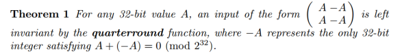
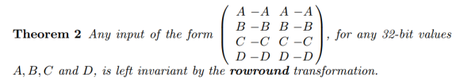
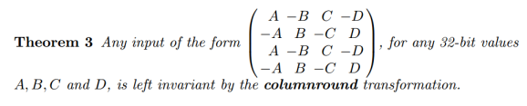
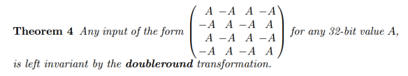

Cryptol> :type 0x1234
0x1234 : [16]
Cryptol> :type [1,2,3,4,5]
[1, 2, 3, 4, 5] : {a} (fin a, a >= 3) => [5][a]Cryptol> :t split
split : {parts, each, a} (fin each)
=> [parts * each]a -> [parts][each]a
littleEndian word = reverse (split `{each=8} word)littleEndian word = reverse (split `{parts=4} word)littleEndian : [32] -> [4][8]
littleEndian word = reverse (split word)quarterround : [4][32] -> [4][32]
quarterround [y0, y1, y2, y3] = [z0, z1, z2, z3]
where
z1 = y1 ^ ((y0 + y3) <<< 0x7)
z2 = y2 ^ ((z1 + y0) <<< 0x9)
z3 = y3 ^ ((z2 + z1) <<< 0xd)
z0 = y0 ^ ((z3 + z2) <<< 0x12)SHA256MessageSchedule : [16][32] -> [64][32]
SHA256MessageSchedule M = W where
W = M #
[ s1 (W@(t-2)) + W@(t-7) + s0 (W@(t-15)) + W@(t-16)
| t <- [16 .. 63] ] while (b >= 64) {
crypto_core_salsa20(x,z,k,sigma);
for (i = 0; i < 64; i++) c[cpos+i] = m[mpos+i] ^ x[i];
u = 1;
for (i = 8; i < 16; i++) {
u = u + (z[i] & 0xff) | 0;
z[i] = u & 0xff;
u >>>= 8;
}
b -= 64;
cpos += 64;
mpos += 64;
} salsa = join [ Salsa20(k, v#(split i)) | i <- [0, 1 ...]]
c = m ^ take salsaprivate key = SCrypt (Blake2s(password))
public key = Curve25519(private, 9)
minilock ID = base58(public || blake2s1(public))
k ← {0, 1}256 ; n ← {0, 1}192
ciphertext = XSalsa20+Poly1305(k, n, file)
For each recipient:
Header = Ephemeral Public Key || Nonce1⋯N || RI1⋯N
grain of salt
Original (javascript) ~4000 lines and 700 lines respectively.
property Salsa20_doubleround_has_no_collisions x1 x2 =
x1 == x2 || doubleround x1 != doubleround x2Salsa20> :check Salsa20_doubleround_has_no_collisions
Using random testing.
passed 100 tests.
Coverage: 0.00% (100 of ...)Salsa20> :exhaust Salsa20_doubleround_has_no_collisions
Using exhaustive testing.
0%Ctrl-CSalsa20> :set prover=z3
Salsa20> :prove Salsa20_doubleround_has_no_collisions
Q.E.D.   
property theorem1 a = quarterround [a, -a, a, -a] == [a,-a,a,-a]property theorem2 a b c d = rowround val == val
where val = [a,-a,a,-a
,b,-b,b,-b
,c,-c,c,-c
,d,-d,d,-d]property theorem3 a b c d = columnround val == val
where val = [a,-b,c,-d
,-a,b,-c,d
,a,-b,c,-d
,-a,b,-c,d]property theorem4 a = doubleround val == val
where val = [a,-a,a,-a
,-a,a,-a,a
,a,-a,a,-a
,-a,a,-a,a]Salsa20> :set prover=any
Salsa20> :prove theorem1
Q.E.D.
Salsa20> :prove theorem2
Q.E.D.
Salsa20> :prove theorem3
Q.E.D.
Salsa20> :prove theorem4
Q.E.D.property theorem7 a b =
a ^ b != diff || Salsa20Words a == Salsa20Words b
where
diff = [ 0x80000000 | _ <- [0..15]]Last minute result: Boolector did terminate after an unimpressive week+ of computation.
property speckKeyExpansionInjective x y =
x == y || speckKeyExpansion x != speckKeyExpansion ySimonAndSpeck> :set prover=boolector
SimonAndSpeck> :prove speckKeyExpansionInjective
Q.E.D.property simon_ident_128_128 k p =
simonD_128_128 k (simonE_128_128 k p) == pSimonAndSpeck> :set prover=any
SimonAndSpeck> :prove simon_ident_128_128
Q.E.D.property ZUC_isResistantToCollisionAttack k iv1 iv2 =
iv1 == iv2 ||
InitializeZUC (k, iv1) @ 1 != InitializeZUC (k, iv2) @ 1Main> :prove ZUC_isResistantToCollisionAttack
ZUC_isResistantToCollisionAttack 0x12000000070000000000c0000085006b
0x0e008f00ff0000000000ff0000ed0040
0x96008f00ff0000000000ff0000ed0040
= Falsem <- cryptol_load "DES.cry";
enc <- define "enc" {{ m::DES.encrypt }};
dec <- define "dec" {{ m::DES.decrypt }};
dec_enc <- time (prove abc {{ \k m -> dec k (enc k m) == m }});
enc_dec <- time (prove abc {{ \k m -> enc k (dec k m) == m }});
letss = simpset [dec_enc, enc_dec];
let{{
enc3 k1 k2 k3 msg = enc k3 (dec k2 (enc k1 msg))
dec3 k1 k2 k3 msg = dec k1 (enc k2 (dec k3 msg))
dec3_enc3 k1 k2 k3 msg = dec3 k1 k2 k3 (enc3 k1 k2 k3 msg) == msg
}};
time (prove do {simplify ss; abc; } {{ dec3_enc3 }});Valid
Time: 4.694s
Valid
Time: 4.718s
Valid
Time: 0.003sproperty theorem7 a b =
a ^ b != diff || Salsa20Words a == Salsa20Words b
where
diff = [ 0x80000000 | _ <- [0..15]]t1_po <- prove_print abc {{ theorem1 }};
...
t5_po <- prove_print abc {{ theorem5 }};
let ss = simpset [ t1_po, t2_po, t3_po, t4_po, t5_po ];
prove_print do { simplify ss; abc ; }
{{ \a -> ( (Salsa20Words a == Salsa20Words (a ^ diff))
where diff = [ 0x80000000 | _ <- [0..15] )
}};Valid
Valid
Valid
Valid
Valid
Proving Theorem 7
Validvoid core(u8 *out,const u8 *in,const u8 *k,const u8 *c) {
u32 w[16],x[16],y[16],t[4];
int i,j,m;
FOR(i,4) {
x[5*i] = ld32(c+4*i);
x[1+i] = ld32(k+4*i);
x[6+i] = ld32(in+4*i);
x[11+i] = ld32(k+16+4*i);
}
FOR(i,16) y[i] = x[i];
FOR(i,20) {
FOR(j,4) {
FOR(m,4) t[m] = x[(5*j+4*m)%16];
t[1] ^= L32(t[0]+t[3], 7);
t[2] ^= L32(t[1]+t[0], 9);
t[3] ^= L32(t[2]+t[1],13);
t[0] ^= L32(t[3]+t[2],18);
FOR(m,4) w[4*j+(j+m)%4] = t[m];
}
FOR(m,16) x[m] = w[m];
}
FOR(i,16) st32(out + 4 * i,x[i] + y[i]); tnacl <- llvm_load_module "tweetnacl.bc";
nacl_salsa20 <- llvm_symexec tnacl symb allocs inits results;
nacl_as <- abstract_symbolic nacl_salsa20;
testAIG <- bitblast nacl_as;
specAIG <- bitblast {{ \k n -> Salsa20_expansion (k,n) }};
cec testAIG specAIG;Proving Salsa20 equivalent between Cryptol spec and tweetnacl.
Loading tweetnacl llvm byte code.
Extracting the Salsa20 encryption function.
Bit blasting the NaCl and Cryptol terms.
Using CEC to prove equivalence.
Valid